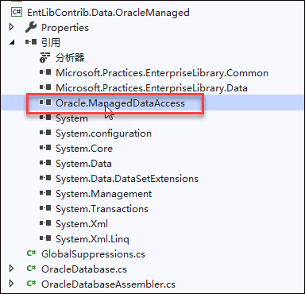
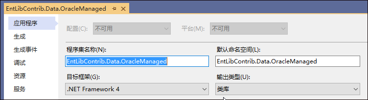
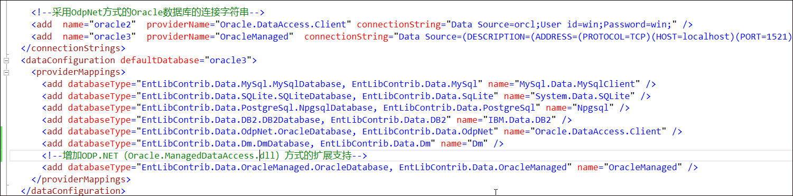
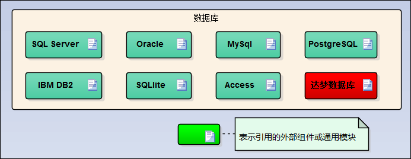
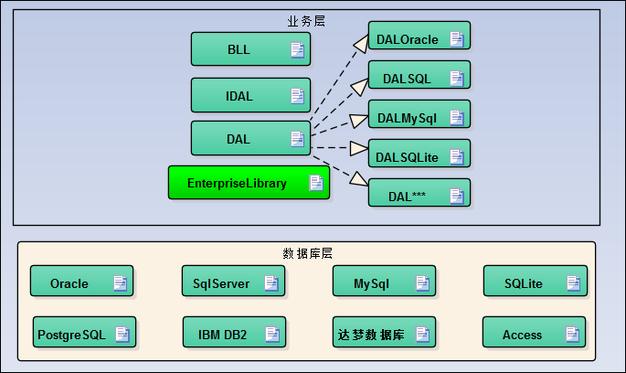
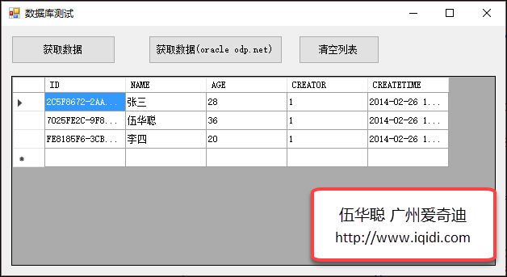

在前面随笔《在代码生成工具Database2Sharp中使用ODP.NET（Oracle.ManagedDataAccess.dll）访问Oracle数据库，实现免安装Oracle客户端，兼容32位64位Oracle驱动》中介绍了在代码生成工具中使用ODP.NET（Oracle.ManagedDataAccess.dll）访问Oracle数据库，如果我们在框架应用中需要使用这个如何处理了？由于我们开发框架底层主要使用微软企业库（目前用的版本是4.1），如果是使用它官方的Oracle扩展，那么就是使用EntLibContrib.Data.OdpNet（这个企业库扩展类库使用了Oracle.DataAccess.dll），不过这种方式还是受限于32位和64位的问题；假如我们使用ODP.NET（Oracle.ManagedDataAccess.dll）方式，可以使用自己扩展企业库支持即可，类似于我们支持国产数据库--达梦数据库一样的原理，使用Oracle.ManagedDataAccess类库可以避免32位和64位冲突问题，实现统一兼容。
为了实现自定义的扩展支持，我们需要对企业库的扩展类库进行处理，类似我们之前编写达梦数据库的自定义扩展类库一样，这方面可以了解下之前的随笔《基于Enterprise Library的Winform开发框架实现支持国产达梦数据库的扩展操作》，我们现在增加对ODP.NET（Oracle.ManagedDataAccess.dll）方式的扩展支持。
首先我们创建一个项目，并通过Nugget的方式获得对应的Oracle.ManagedDataAccess.dll类库，参考企业库对于Mysql的扩展或者其他的扩展，稍作调整即可。

OracleDatabase类似下面代码
using System;
using System.Data;
using System.Data.Common;
using Microsoft.Practices.EnterpriseLibrary.Common;
using Microsoft.Practices.EnterpriseLibrary.Data;
using Microsoft.Practices.EnterpriseLibrary.Data.Configuration;
using Oracle.ManagedDataAccess.Client;
namespace EntLibContrib.Data.OracleManaged
{
/// <summary>
/// <para>Oracle数据库对象(使用ODP驱动)</para>
/// </summary>
/// <remarks>
/// <para>
/// Internally uses OracleProvider from Oracle to connect to the database.
/// </para>
/// </remarks>
[DatabaseAssembler(typeof(OracleDatabaseAssembler))]
public class OracleDatabase : Database
{
/// <summary>
/// Initializes a new instance of the <see cref="OracleDatabase"/> class
/// with a connection string.
/// </summary>
/// <param name="connectionString">The connection string.</param>
public OracleDatabase(string connectionString) : base(connectionString, OracleClientFactory.Instance)
{
}
/// <summary>
/// <para>
/// Gets the parameter token used to delimit parameters for the
/// Oracle database.</para>
/// </summary>
/// <value>
/// <para>The '?' symbol.</para>
/// </value>
protected char ParameterToken
{
get
{
return ':';
}
}
.........主要就是把对应的类型修改为Oracle的即可，如Oracle的名称，以及参数的符号为 ：等地方，其他的一一调整即可，不在赘述。
完成后，修改程序集名称，编译为 EntLibContrib.Data.OracleManaged.dll 即可。

完成上面的步骤，我们就可以在配置文件中增加配置信息如下所示，它就能正常的解析并处理了。

上面使用了两种方式，一种是官方扩展的EntLibContrib.Data.OdpNet方式，一种是我们这里刚刚出炉的 EntLibContrib.Data.OracleManaged方式，完整的数据库支持文件信息如下所示。
<?xml version="1.0"?>
<configuration>
<configSections>
<section name="dataConfiguration" type="Microsoft.Practices.EnterpriseLibrary.Data.Configuration.DatabaseSettings, Microsoft.Practices.EnterpriseLibrary.Data"/>
<section name="oracleConnectionSettings" type="EntLibContrib.Data.OdpNet.Configuration.OracleConnectionSettings, EntLibContrib.Data.OdpNet" />
</configSections>
<connectionStrings>
<!--SQLServer数据库的连接字符串-->
<add name="sqlserver" providerName="System.Data.SqlClient" connectionString="Persist Security Info=False;Data Source=(local);Initial Catalog=WinFramework;Integrated Security=SSPI"/>
<!--Oracle数据库的连接字符串-->
<add name="oracle" providerName="System.Data.OracleClient" connectionString="Data Source=orcl;User ID=whc;Password=whc"/>
<!--MySQL数据库的连接字符串-->
<add name="mysql" providerName="MySql.Data.MySqlClient" connectionString="Server=localhost;Database=WinFramework;Uid=root;Pwd=123456;"/>
<!--PostgreSQL数据库的连接字符串-->
<add name="npgsql" providerName="Npgsql" connectionString="Server=localhost;Port=5432;Database=postgres;User Id=postgres;Password=123456"/>
<!--路径符号|DataDirectory|代表当前运行目录-->
<!--SQLite数据库的连接字符串-->
<add name="sqlite" providerName="System.Data.SQLite" connectionString="Data Source=|DataDirectory|\WinFramework.db;Version=3;" />
<!--Microsoft Access数据库的连接字符串-->
<add name="access" providerName="System.Data.OleDb" connectionString="Provider=Microsoft.Jet.OLEDB.4.0;Data Source=|DataDirectory|\WinFramework.mdb;User ID=Admin;Jet OLEDB:Database Password=;" />
<!--IBM DB2数据库的连接字符串-->
<add name="db2" providerName="IBM.Data.DB2" connectionString="database=whc;uid=whc;pwd=123456"/>
<!--采用OdpNet方式的Oracle数据库的连接字符串-->
<add name="oracle2" providerName="Oracle.DataAccess.Client" connectionString="Data Source=orcl;User id=win;Password=win;" />
<add name="oracle3" providerName="OracleManaged" connectionString="Data Source=(DESCRIPTION=(ADDRESS=(PROTOCOL=TCP)(HOST=localhost)(PORT=1521))(CONNECT_DATA=(SERVER=DEDICATED)(SERVICE_NAME=orcl.mshome.net)));User ID=win;Password=win" />
</connectionStrings>
<dataConfiguration defaultDatabase="oracle3">
<providerMappings>
<add databaseType="EntLibContrib.Data.MySql.MySqlDatabase, EntLibContrib.Data.MySql" name="MySql.Data.MySqlClient" />
<add databaseType="EntLibContrib.Data.SQLite.SQLiteDatabase, EntLibContrib.Data.SqLite" name="System.Data.SQLite" />
<add databaseType="EntLibContrib.Data.PostgreSql.NpgsqlDatabase, EntLibContrib.Data.PostgreSql" name="Npgsql" />
<add databaseType="EntLibContrib.Data.DB2.DB2Database, EntLibContrib.Data.DB2" name="IBM.Data.DB2" />
<add databaseType="EntLibContrib.Data.OdpNet.OracleDatabase, EntLibContrib.Data.OdpNet" name="Oracle.DataAccess.Client" />
<add databaseType="EntLibContrib.Data.Dm.DmDatabase, EntLibContrib.Data.Dm" name="Dm" />
<!--增加ODP.NET（Oracle.ManagedDataAccess.dll）方式的扩展支持-->
<add databaseType="EntLibContrib.Data.OracleManaged.OracleDatabase, EntLibContrib.Data.OracleManaged" name="OracleManaged" />
</providerMappings>
</dataConfiguration>
<appSettings>
</appSettings>
<startup useLegacyV2RuntimeActivationPolicy="true">
<supportedRuntime version="v4.0" sku=".NETFramework,Version=v4.0"/>
<supportedRuntime version="v2.0.50727"/>
</startup>
</configuration>这样我们底层就可以实现多种数据库的兼容访问了。

采用不同的数据库，我们需要为不同数据库的访问层进行生成处理，如为SQLServer数据的表生成相关的数据访问层DALSQL，里面放置各个表对象的内容，不过由于采用了相关的继承类处理和基于数据库的代码生成，需要调整的代码很少。

我们来编写一段简单的程序代码来测试支持这种ODP.net方式，测试代码如下所示。
private void btnGetData_Click(object sender, EventArgs e)
{
string sql = "select * from T_Customer";// + " Where Name = :name";
Database db = DatabaseFactory.CreateDatabase();
DbCommand command = db.GetSqlStringCommand(sql);
//command.Parameters.Add(new OracleParameter("name", "张三"));
using (var ds = db.ExecuteDataSet(command))
{
this.dataGridView1.DataSource = ds.Tables[0];
}
}测试界面效果如下所示。

以上这些处理，可以适用于Web框架、Bootstrap开发框架、Winform开发框架、混合式开发框架中的应用，也就是CS、BS都可以使用。